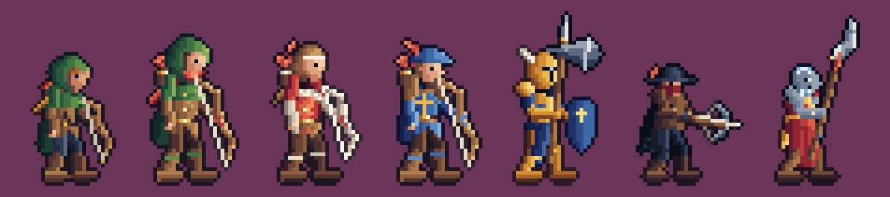
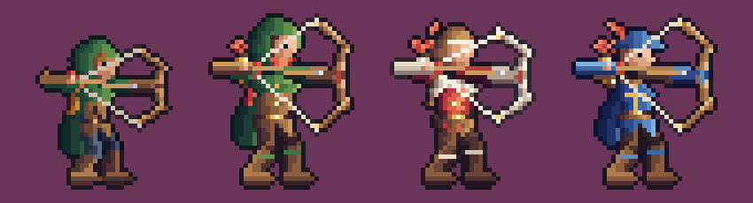
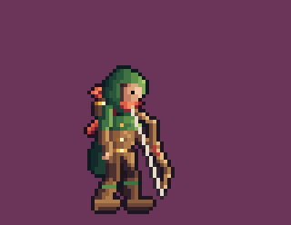
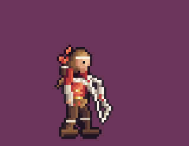
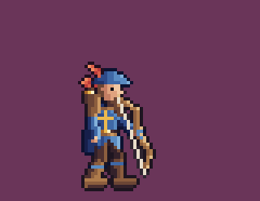

De izquierda a derecha: el Ranger actual, los conceptos A, B y C, y tres enemigos para comparar (templario, cazador furtivo, monje). Los conceptos son más altos (40–41 px frente a 36), con un color de acento fuerte, arco y carcaj más grandes y más tonos.


El montaraz del bosque: la idea del Ranger actual, llevada más lejos. Capucha y esclavina de musgo con luz en el borde, capa larga, un arco largo casi de su altura, carcaj con plumas carmesí, broches de latón y bufanda carmesí.

La cazadora de la estepa: sin capucha, pelo cobrizo en una trenza que se balancea, pluma en la cinta, cuello de piel sobre un chaleco carmesí, arco corto de cuerno con remates de latón. La más ligera y la más distinta de la actual.

El guardabosques de la Legión: gorra con pluma, tabardo azul con la cruz de latón del Knight, media capa azul, arco largo de tejo con empuñadura azul. El grupo se lee como un mismo ejército.
